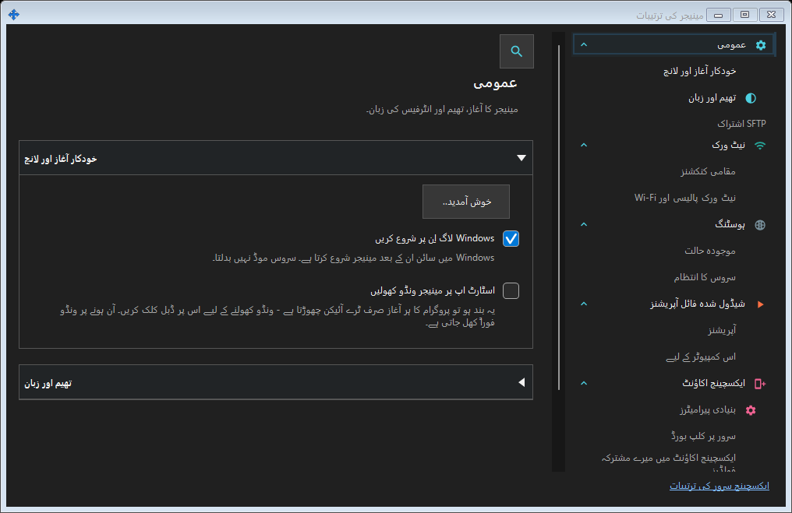
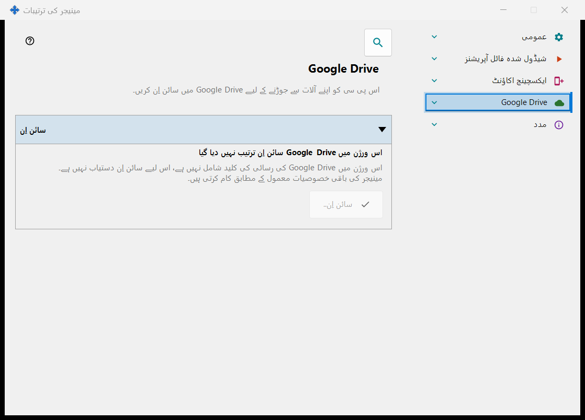
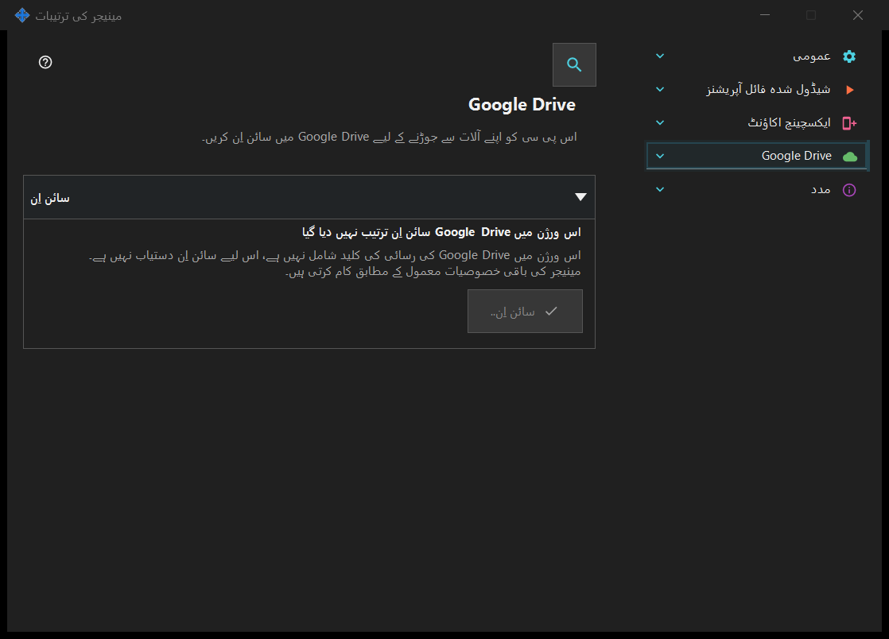

مینیجر کی ترتیبات
مینیجر کی ترتیبات
یہ کس مقصد کے لیے ہے
آغاز، تھیم، زبان، دور دراز اکاؤنٹ، اشاعت، کلپ بورڈ اور طے شدہ فائل کام مینیجر میں ہیں۔ مقامی سرور ضروری نہیں۔ اگر SFTP اشتراک جزو نصب ہو تو اس کے صفحات اس ونڈو میں ایک گروپ بناتے ہیں۔


اس ترتیب میں
ٹرے یا جزو کے لنک سے کھولیں۔ ونڈو کھولنا یا بند کرنا سرور کو چلاتا یا روکتا نہیں۔ دور دراز لاگ ان کے لیے مقامی سرور ضروری نہیں۔
عناصر
مینیجر کی ترتیبات
آغاز، تھیم، زبان، دور دراز اکاؤنٹ، اشاعت، کلپ بورڈ اور طے شدہ فائل کام مینیجر میں ہیں۔ مقامی سرور ضروری نہیں۔ اگر SFTP اشتراک جزو نصب ہو تو اس کے صفحات اس ونڈو میں ایک گروپ بناتے ہیں۔ ٹرے یا جزو کے لنک سے کھولیں۔ ونڈو کھولنا یا بند کرنا سرور کو چلاتا یا روکتا نہیں۔ دور دراز لاگ ان کے لیے مقامی سرور ضروری نہیں۔
مینیجر کی ترتیبات
آغاز، تھیم، زبان، دور دراز اکاؤنٹ، اشاعت، کلپ بورڈ اور طے شدہ فائل کام مینیجر میں ہیں۔ مقامی سرور ضروری نہیں۔ اگر SFTP اشتراک جزو نصب ہو تو اس کے صفحات اس ونڈو میں ایک گروپ بناتے ہیں۔ ٹرے یا جزو کے لنک سے کھولیں۔ ونڈو کھولنا یا بند کرنا سرور کو چلاتا یا روکتا نہیں۔ دور دراز لاگ ان کے لیے مقامی سرور ضروری نہیں۔
Google Drive
- Share Manager کھولیں، «مینیجر کی ترتیبات» کھولیں اور «Google Drive» صفحہ منتخب کریں۔ آپ کو ایک Google اکاؤنٹ اور انٹرنیٹ کنکشن چاہیے۔ Windows کے لیے Google Drive ایپ کی ضرورت نہیں ہے، اور آپ خود Google کا کوئی پروجیکٹ، کلید یا ترتیب نہیں بناتے۔
- «سائن اِن..» دبائیں۔ ڈیفالٹ براؤزر Google کا صفحہ کھولتا ہے: اکاؤنٹ منتخب کریں، وہیں سائن اِن کریں اور دکھائی گئی رسائی کی اجازت دیں۔ پاس ورڈ صرف Google کے صفحے پر لکھا جاتا ہے، اس ایپ میں کبھی نہیں۔ وہاں آپ سائن اِن منسوخ بھی کر سکتے ہیں یا رسائی دینے سے انکار کر سکتے ہیں؛ تب کچھ بھی محفوظ نہیں ہوتا۔
- Share Manager پر واپس آئیں: گہرے حروف والی سطر «Google Drive میں سائن اِن ہو چکا ہے» دکھاتی ہے، اور آپ براؤزر کا ٹیب بند کر سکتے ہیں۔ اگر براؤزر نہیں کھلا تو اپنا ڈیفالٹ براؤزر جانچیں اور «سائن اِن..» دوبارہ دبائیں۔ اگر براؤزر کوئی خرابی دکھائے، یا صفحہ مسلسل «براؤزر میں سائن اِن کا انتظار ہے..» دکھاتا رہے تو «منسوخ کریں» دبائیں اور دوبارہ سائن اِن کریں۔ سائن اِن اسی پی سی پر رہتا ہے: Share Manager بند کرنے، Windows سے سائن اوٹ کرنے یا پی سی ری اسٹارٹ کرنے کے بعد وہ براؤزر کے بغیر دوبارہ استعمال ہوتا ہے، جب تک Google رسائی کو درست رکھتا ہے۔
- کسی دوسرے آلے کے ساتھ تبادلے کے لیے وہاں بھی اسی Google اکاؤنٹ سے سائن اِن کریں، اس آلے کے اپنے Google Drive صفحے پر: دوسرے پی سی پر اس کے Share Manager میں، فون پر Android ایپ میں۔ مختلف Google اکاؤنٹس میں سائن اِن آلات ایک دوسرے کو نہیں دیکھتے، اور دونوں آلات پر ایپ کا ایسا ورژن چاہیے جس میں Google Drive صفحہ ہو۔ سائن اِن ہونے سے خود کچھ نہیں بھیجا جاتا: Google Drive کے ذریعے کیا جاتا ہے، یہ کلپ بورڈ، شیڈول شدہ آپریشنز اور «Google Drive پر قطار» گروپ کی مدد میں بیان کیا گیا ہے۔
- ایپ صرف آپ کے Google Drive پر اپنے چھپے ہوئے فولڈر تک رسائی مانگتی ہے (اسکوپ drive.appdata)۔ آپ کے Google Drive کی دوسری فائلیں وہ نہ دیکھتی ہے، نہ براؤز کرتی ہے، نہ سنک کرتی ہے، اور اسے ای میل پتہ یا پروفائل کا ڈیٹا نہیں ملتا۔ آپ کے آلات ایک دوسرے کو جو بھیجتے ہیں وہ آپ کے Google Drive میں جگہ لیتا ہے؛ «Google Drive پر قطار» گروپ اسے دکھاتا ہے اور پیکٹ حذف کرنے دیتا ہے۔ «اس آلے پر سائن اوٹ کریں» چھپے ہوئے فولڈر سے اس پی سی کے ریکارڈ حذف کرتا ہے، Google پر رسائی منسوخ کرتا ہے اور اس پی سی پر محفوظ سائن اِن حذف کر دیتا ہے۔ اس کے بعد Google اسی اکاؤنٹ سے سائن اِن آپ کے دوسرے آلات پر بھی رسائی ختم کر سکتا ہے؛ اگر ان میں سے کوئی بتائے کہ اس کا سائن اِن اب کام نہیں کرتا تو وہاں دوبارہ سائن اِن کریں۔ اس پی سی کو دوبارہ جوڑنے کے لیے «سائن اِن..» دبائیں۔
- اگر کچھ غلط ہو جائے تو حالت کے نیچے کی سطر بتاتی ہے کہ کیا ہوا۔ رابطہ نہیں ہے، یا Google سے خرابی: ایپ خود دوبارہ کوشش کرتی ہے، آپ کو کچھ کرنے کی ضرورت نہیں۔ سائن اِن منسوخ ہوا یا رسائی مسترد ہوئی: جب چاہیں «سائن اِن..» دوبارہ دبائیں۔ ایسا اکاؤنٹ جسے کوئی ادارہ منظم کرتا ہے اور جس کا منتظم ایپ کو روکتا ہے: کسی دوسرے Google اکاؤنٹ سے سائن اِن کریں یا منتظم سے پوچھیں۔ پیغام کہ سائن اِن اب کام نہیں کرتا: رسائی منسوخ ہو گئی یا ختم ہو گئی ہے، «سائن اِن..» دوبارہ دبائیں۔ آپ کے Google Drive میں خالی جگہ نہیں ہے: جگہ خالی کریں یا قطار سے پیکٹ حذف کریں۔ اپ لوڈ کی یومیہ حد: اگلے دن تک انتظار کریں۔ «اس ورژن میں Google Drive سائن اِن ترتیب نہیں دیا گیا»، یا پیغام کہ اس انسٹالیشن کی سائن اِن کلید اب قبول نہیں کی جاتی: ایپ کا موجودہ ورژن اس کی سرکاری سائٹ سے انسٹال کریں؛ اس دوران Share Manager کی باقی خصوصیات کام کرتی ہیں۔
یہ صفحہ اس پی سی کو آپ کے اپنے Google اکاؤنٹ میں سائن اِن کرتا ہے تاکہ ایپ آپ کے Google Drive پر اپنا نجی چھپا ہوا فولڈر استعمال کر سکے۔ «سائن اِن..» دبائیں: ڈیفالٹ براؤزر کھلتا ہے، آپ Google پر رسائی کی اجازت دیتے ہیں، اور Google جواب کو ایک مقامی پتے کے ذریعے اس پی سی پر واپس بھیج دیتا ہے؛ اس کے بعد براؤزر کا ٹیب بند کیا جا سکتا ہے۔ جو واحد اجازت مانگی جاتی ہے وہ آپ کے Google Drive پر ایپ کے اپنے چھپے ہوئے فولڈر تک رسائی ہے (اسکوپ drive.appdata): ایپ آپ کے Google Drive کی کوئی دوسری فائل نہیں دیکھ سکتی اور اسے نہ ای میل پتہ ملتا ہے، نہ پروفائل کا ڈیٹا۔ اگر Google مطلوبہ رسائی سے مختلف رسائی دے تو سائن اِن مسترد کر دیا جاتا ہے۔ گہرے حروف والی سطر حالت دکھاتی ہے۔ «Google Drive میں سائن اِن نہیں ہے»: «سائن اِن..» دستیاب ہے؛ اگر رسائی منسوخ ہو گئی یا ختم ہو گئی ہو تو نیچے کی سطر یہ بتاتی ہے اور دوبارہ سائن اِن کرنے کو کہتی ہے۔ «براؤزر میں سائن اِن کا انتظار ہے..»: براؤزر میں سائن اِن مکمل کریں یا «منسوخ» دبائیں۔ «Google Drive میں سائن اِن ہو چکا ہے»: یہ پی سی آپ کے Google Drive سے جڑا ہوا ہے، اور اس کا نام اور مختصر شناخت کنندہ دکھایا جاتا ہے۔ «Google Drive اس وقت دستیاب نہیں ہے»: نیچے کی سطر وجہ بتاتی ہے - رابطہ نہیں ہے، اپ لوڈ کی یومیہ حد پوری ہو گئی ہے، آپ کے Google Drive میں خالی جگہ نہیں ہے، یا Google سے خرابی آئی ہے؛ رابطہ نہ ہونے پر اور خرابی کی صورت میں ایپ خود دوبارہ کوشش کرتی ہے۔ سائن اوٹ کے دوران «Google Drive سے سائن اوٹ ہو رہا ہے..» دکھایا جاتا ہے۔ «اس آلے پر سائن اوٹ کریں» ایک ہی سوال پوچھتا ہے، اور طے شدہ جواب «نہیں» ہے۔ «ہاں» کے بعد یہ Google پر رسائی منسوخ کرتا ہے، آپ کے Google Drive کے چھپے ہوئے فولڈر سے اس پی سی کے ریکارڈ حذف کرتا ہے اور اس پی سی پر محفوظ سائن اِن ٹوکن حذف کر دیتا ہے؛ بٹنوں کے نیچے کی سطر بتاتی ہے کہ کتنے ریکارڈ حذف ہوئے، یا یہ کہ Google نے رسائی کی منسوخی کی تصدیق نہیں کی - تب آپ اسے اپنے Google اکاؤنٹ کی ترتیبات میں منسوخ کر سکتے ہیں۔ Google کی رسائی کی کلید کے بغیر بنے ورژن میں صفحہ «اس ورژن میں Google Drive سائن اِن ترتیب نہیں دیا گیا» دکھاتا ہے، «سائن اِن..» غیر فعال رہتا ہے اور مینیجر کی باقی خصوصیات معمول کے مطابق کام کرتی ہیں۔ جب تک یہ پی سی سائن ان ہے، Share Manager کے کلپ بورڈ کمانڈ Google Drive کے ذریعے بھی کام کرتے ہیں، شیڈول شدہ آپریشن «Google Drive کے ذریعے» کو ماخذ یا منزل بنا سکتا ہے، اور ویور کی وسائل کی فہرست وہ فولڈر دکھاتی ہے جو آپ کے دوسرے آلات وہاں شائع کرتے ہیں۔ «Google Drive پر قطار» گروپ دکھاتا ہے کہ آپ کے آلات ایک دوسرے کو کیا بھیجتے ہیں اور اس میں کتنی جگہ لگتی ہے؛ کوئی پیکٹ چنیں اور اسے اپنے Google Drive سے ہٹانے کے لیے «پیکٹ حذف کریں» دبائیں۔ Google Drive کے ذریعے فائلیں اور کلپ بورڈ آپ کے اپنے Google اکاؤنٹ میں رکھے جاتے ہیں، جیسے Google Drive پر آپ کی دوسری فائلیں؛ کوئی تبادلے کا سرور اس میں شامل نہیں ہوتا۔


مینیجر کی ترتیبات
آغاز، تھیم، زبان، دور دراز اکاؤنٹ، اشاعت، کلپ بورڈ اور طے شدہ فائل کام مینیجر میں ہیں۔ مقامی سرور ضروری نہیں۔ اگر SFTP اشتراک جزو نصب ہو تو اس کے صفحات اس ونڈو میں ایک گروپ بناتے ہیں۔ ٹرے یا جزو کے لنک سے کھولیں۔ ونڈو کھولنا یا بند کرنا سرور کو چلاتا یا روکتا نہیں۔ دور دراز لاگ ان کے لیے مقامی سرور ضروری نہیں۔
مینیجر کی ترتیبات
مدد / تعارف میں تجزیے کے لیے لاگز برآمد کریں منتخب کریں۔ مقامی Media Exchange Server، SFTP، تنصیب اور معاون آلات، مینیجر اور ویوئر کے تمام محفوظ لاگز جمع ہوتے ہیں، سرور بند ہونے پر بھی۔ دور دراز کے لاگز ڈاؤن لوڈ نہیں ہوتے۔ خفیہ معلومات ہٹائی جاتی ہیں؛ مختصر، خارج یا ناقابل مطالعہ ذرائع جائزے میں دکھتے ہیں اور آرکائیو نامکمل ہوتا ہے۔ مصنف کو بھیجیں جائزہ شدہ ZIP کے ساتھ میل کا مسودہ کھولتا ہے؛ بھیجنے کا فیصلہ آپ کا ہے۔ منسلکہ ناکام ہو تو ZIP خود شامل کریں۔ فائل ایکسپلورر میں دکھائیں ZIP منتخب کرتا ہے: کاپی کر کے دوسرے فولڈر میں پیسٹ کریں۔ ناکامی پر جائزے سے راستہ منتخب اور کاپی کریں۔ دکھانے یا میل مانگنے کے بعد آرکائیو رہتا ہے، میل منسوخ کرنے پر بھی۔ اس سے پہلے منسوخ کرنے پر حذف ہوتا ہے۔ اگلا برآمد سات دن پرانے غیر استعمال شدہ آرکائیو صاف کرتا ہے؛ زیادہ عرصے کے لیے ZIP کہیں اور کاپی کریں۔ 20 MiB سے بڑے آرکائیو ایکسپلورر میں دستیاب ہیں، میل کے حوالے کرنا بند رہتا ہے۔
مینیجر کی ترتیبات · SFTP اشتراک کی ترتیبات · ایکسچینج سرور کی ترتیبات